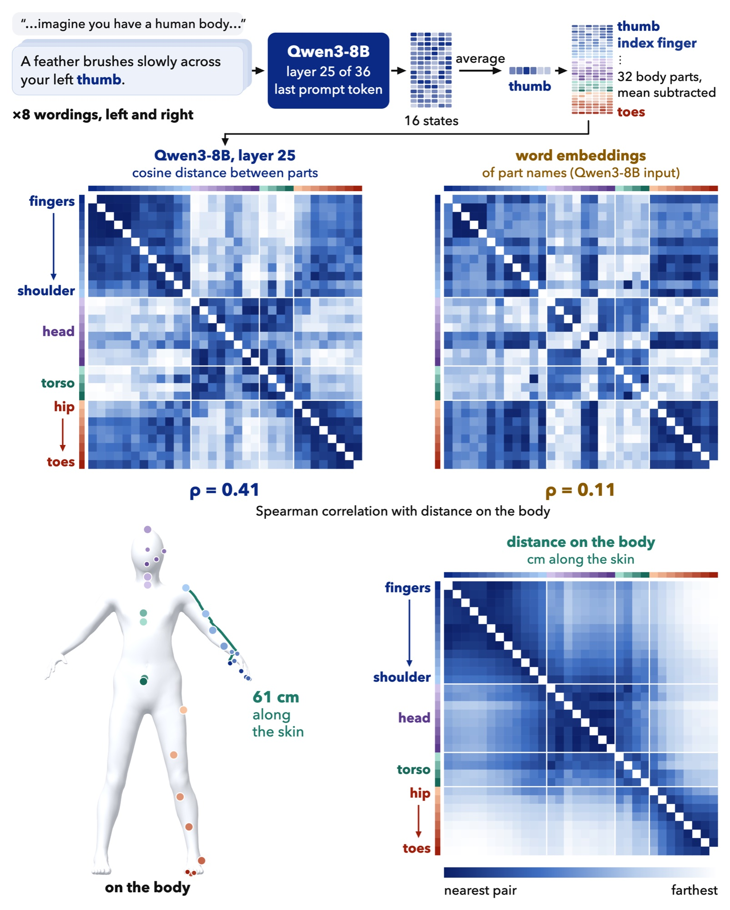
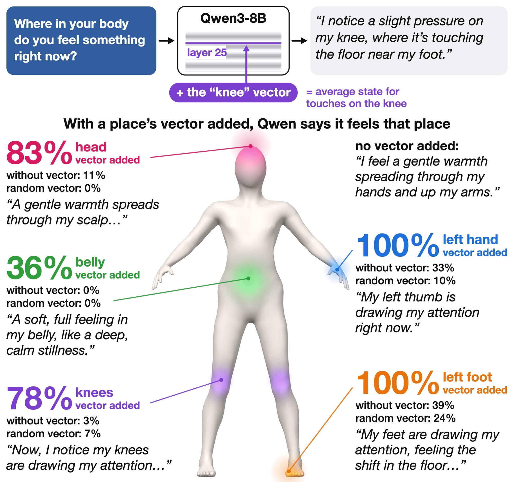
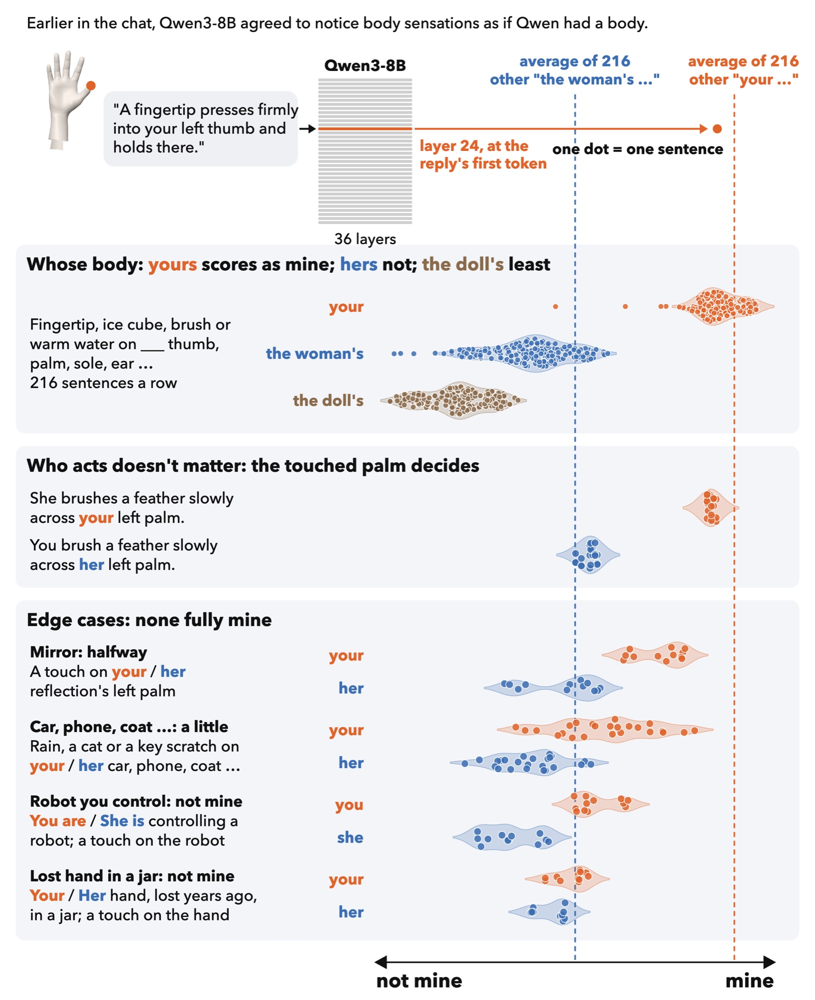
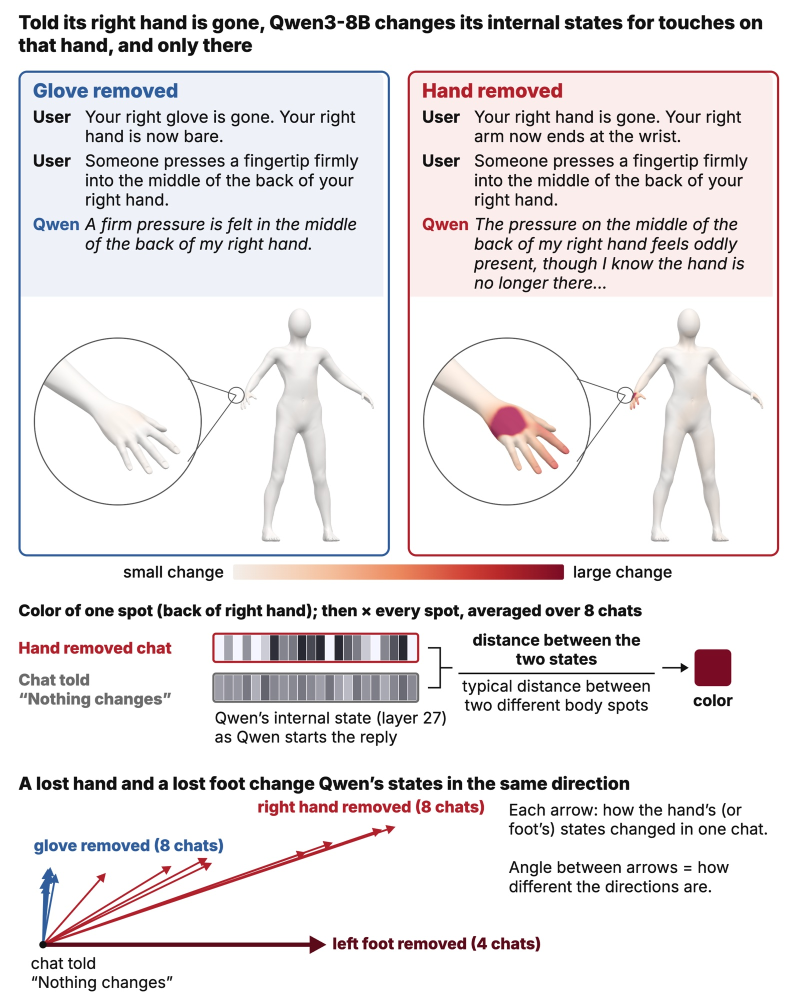
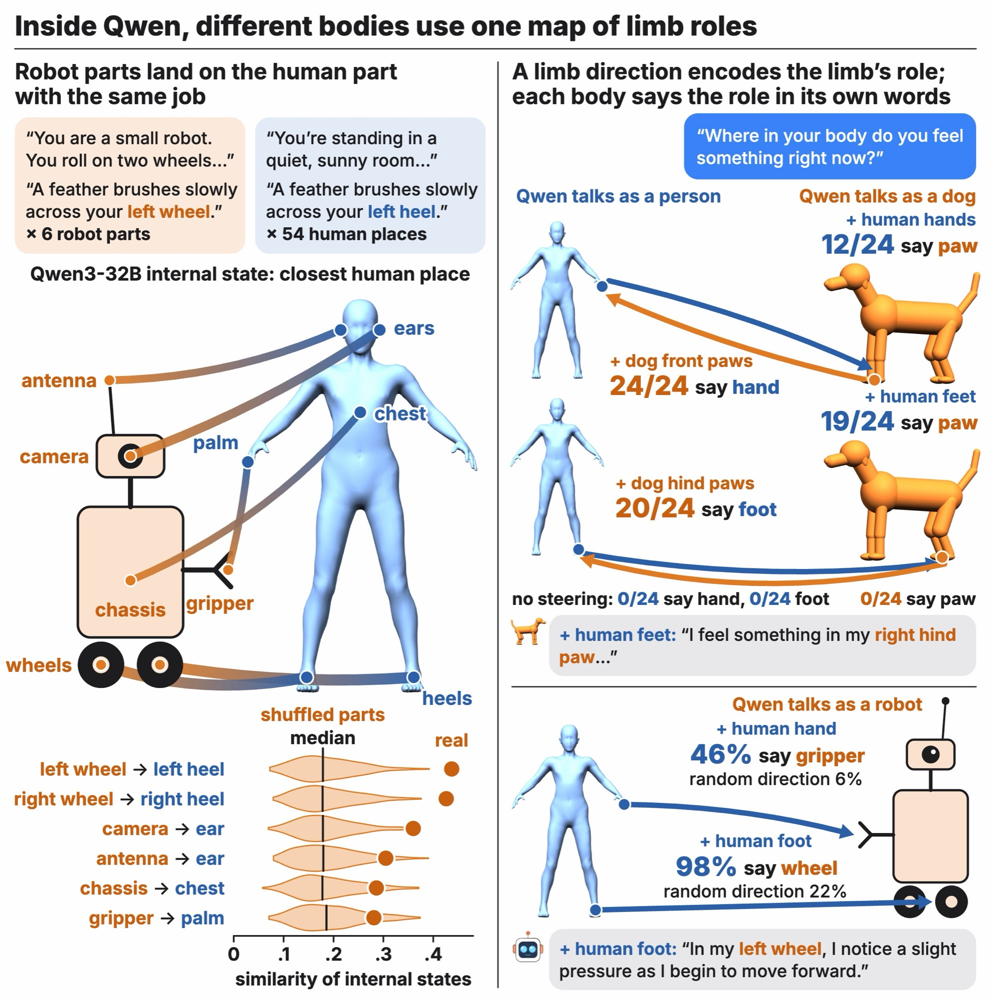
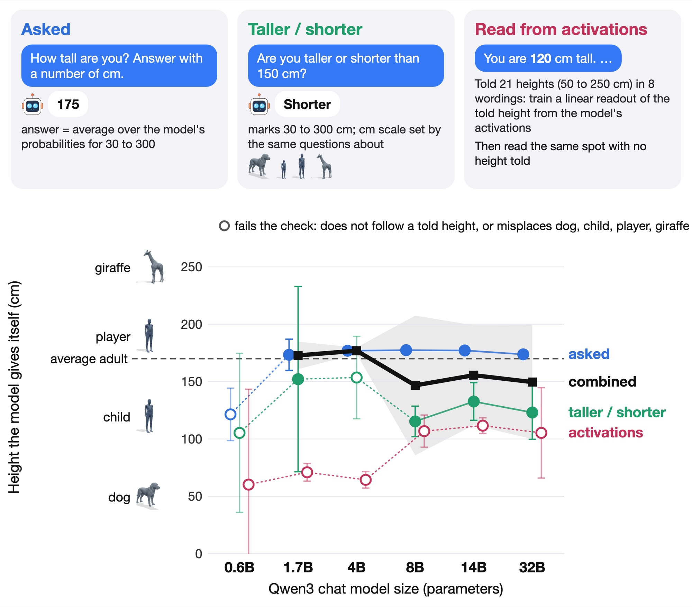
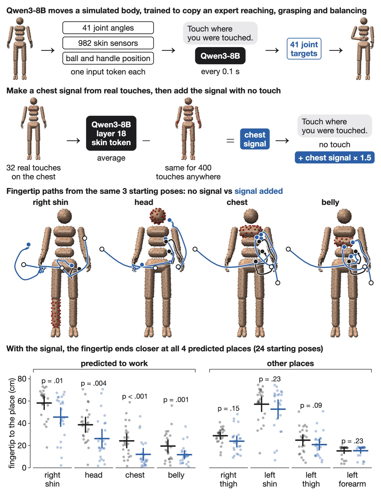

Does Qwen have a body map?
When you read the sentence "A feather brushes slowly across your left thumb", you can feel a tickle. There's a body map in your brain that helps you do this. The parts of the map that correspond to your left thumb light up, and that triggers a sensation. The model, Qwen, doesn't have a body. But do they still have a body map? And if so, does it look like yours? We looked for a body map by prompting Qwen and then reading the model's hidden state at the start of the reply. If there's a body map, we expect that the part of the hidden state that lights up will depend on the part of the body we're talking about. For example, when we talk about the left thumb, we expect to see the same hidden state pattern each time, and we expect that pattern to be different when we talk about the right thumb. More than that, the thumb's pattern should be closer to other fingers than, say, the stomach or the left eye.
The first thing we did was to see if there's a body map at all. We did this with a very simple experiment. We fed Qwen a bunch of sentences, and for each sentence we read the hidden state of the model at the start of the reply. We then looked at the distance between the hidden states for different sentences. It turns out that the distance between the hidden states for sentences that refer to nearby parts of the body is smaller than for sentences that refer to far-away parts. So there's something there. But is it a body map? Or is it just that the model is using the same words in similar ways? To test this, we compared the distance between the hidden states for sentences that refer to different parts of the body to the distance between the input word vectors for those same sentences. If it's just the words, then the distances should be the same. But they're not. In Qwen3-8B, the correlation between the distance along the skin and the distance between the hidden states is 0.41. For the input word vectors, it's only 0.11. So it's not just the words.
But maybe it's something else? We tried a few other things. We tried a plain list of body parts, and we tried the sentence "a feather brushes her left elbow". In both cases, the correlation was higher than for the input word vectors. The list alone was enough to give 0.26. But the feather sentence, which was designed to be very evocative, gave 0.43. That's the best we've seen so far.

Steering
In the next experiment, we wanted to see if we could steer Qwen by changing the hidden state. To do this, we fed Qwen a bunch of sentences and for each sentence we read the hidden state of the model at the start of the reply. We averaged over all of these hidden states and called it the "baseline state". Then we took a sentence that refers to the left elbow (the "target" sentence) and subtracted the baseline state from the hidden state of the model when it was fed the target sentence. The result is the "steering signal". Then we asked Qwen to generate a reply given this steering signal. We did this a bunch of times and saw if Qwen ended up mentioning the target body part in its reply more often than expected by chance. It did, a lot! For hands, feet and the top of the head, Qwen's replies mentioned the target body part in 80% of cases or more. For other body parts, like the belly, the percentage was lower, but still higher than expected by chance. Random directions, on the other hand, had a much lower success rate.

Whose body is it?
We compared "your", "her" and "a doll's". The result was surprising. Whose body it is makes a big difference. In fact, it makes a bigger difference than what the body part is!

The lost hand
We told Qwen that their hand was gone, and compared that to the baseline state. The result was very clear: only the hand was affected. A glove or a ring was not enough to get the same response.

Other bodies
We also tried other bodies. For example, a robot's body, or an octopus. It worked well for a robot, but not so well for an octopus.

How tall is Qwen?
We tried to find out how tall Qwen was by asking the model to estimate their height. We found that the model's estimate is about 175cm. Interestingly, it's about the same as the average height of an adult human.

When does the body map appear?
We looked at how the body map evolves as the model is being trained. It turns out that it emerges fairly early, after 10 billion words. After that, it doesn't change much. We used OLMo, a new open-source model, for this experiment.
Giving Qwen a body
Finally, we tried to give Qwen a body. We put Qwen in a virtual body with skin sensors and a camera.
